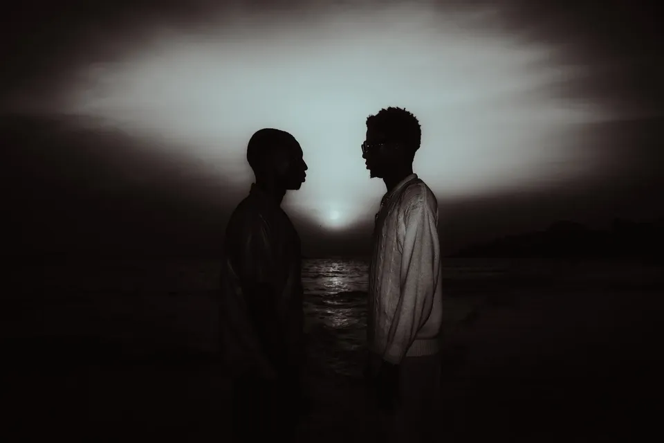

Chapitre 05 / 06 · Projets d'expositionChapter 05 / 06 · Exhibition projects
La bourrasque de la presqu'île du Cap-Vert
Des portraits face à l'océan, sur les plages de la presqu'île du Cap-Vert où s'étend Dakar, du coucher du soleil à la nuit tombée.Portraits facing the ocean, on the beaches of the Cap-Vert peninsula where Dakar lies, from sunset into nightfall.
- RôleRole
- PhotographiePhotography
- LieuPlace
- Dakar

SélectionSelection
Toutes les photos (18)All photos (18)
Autres projetsMore projects
 As salam wa al‑‘usra2025 · 19 photos
As salam wa al‑‘usra2025 · 19 photos Mécanique passionnelleDakar · Olympique Club · 2025 · 10 photos
Mécanique passionnelleDakar · Olympique Club · 2025 · 10 photos The Bashment10 soirées photographiées sur au moins 100 · 100e édition fêtée en octobre 202510 nights photographed out of at least 100 · 100th edition celebrated in October 2025
The Bashment10 soirées photographiées sur au moins 100 · 100e édition fêtée en octobre 202510 nights photographed out of at least 100 · 100th edition celebrated in October 2025 La Forge3 saisons photographiées3 seasons photographed
La Forge3 saisons photographiées3 seasons photographedUn projet en tête ?Have a project in mind?
Soirée, concert, équipe, marque ou shooting : écrivez-moi, je vous réponds avec plaisir.A party, a concert, a team, a brand or a shoot: write to me, I’d love to hear from you.